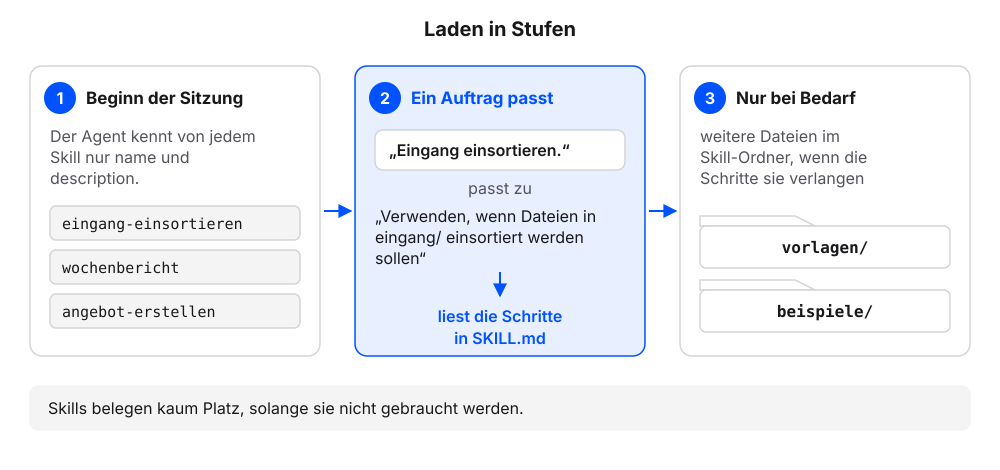
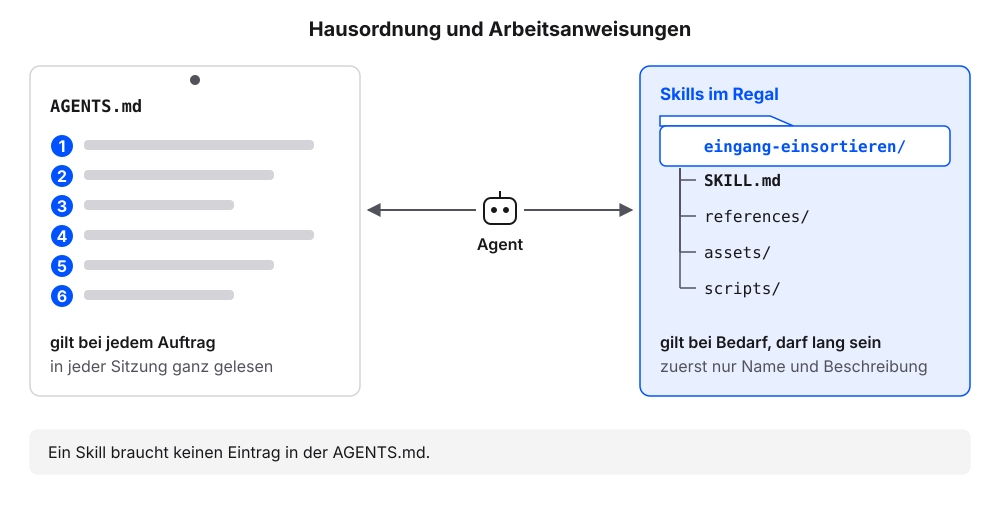

10 Skills: Abläufe, die bleiben
Den Ablauf zum Einsortieren aus dem Kapitel Laufend neue Dateien haben wir als langen Auftrag mit sechs Schritten geschickt. Jede Woche kommt neue Post, und jede Woche müssten wir den Auftrag wieder einfügen, ohne Tippfehler und ohne einen Schritt zu vergessen. Ein Skill hält einen solchen Ablauf als Datei im Ordner fest. Wir legen mit dem eigenen Agenten Schritt für Schritt einen Skill an und lösen ihn mit einem kurzen Auftrag aus. Im dritten, freiwilligen Schritt machen wir aus einer Aufgabe der eigenen README.md einen zweiten Skill. Die Erklärung folgt jeweils am eigenen Ergebnis.
Jeder Schritt hat denselben Aufbau: ein Auftrag zum Kopieren, ein Kasten „So sieht es im Beispielfall aus“, eine kurze Erklärung und ein Abschnitt „Wenn es anders aussieht“.
Voraussetzung: Der eigene Projektordner ist in der App des Agenten gewählt (Beispielfall: kundenanfragen). Der Ordner eingang/ ist leer (Stand nach dem Kapitel Laufend neue Dateien).
10.1 Schritt 1: Den Skill anlegen
Diese Frage senden:
In welchem Ordner erwartest du Skills für dieses Projekt, und in welchem für alle Projekte? Welche Skills kennst du gerade? Nur auflisten.Prüfen: Der Agent nennt einen Ordner für Skills in diesem Projekt.
Diesen Auftrag senden:
Erstelle einen Skill mit dem Namen eingang-einsortieren an dem Ort, an dem du Skills in diesem Projekt erwartest. Die Datei SKILL.md beginnt mit Frontmatter: name: eingang-einsortieren, description: Verwenden, wenn Dateien in eingang/ einsortiert werden sollen. Danach diese sechs Schritte, wörtlich: 1. Lies jede Datei in eingang/. 2. Bestimme die Art: eine Art aus dem Abschnitt Material der README.md, Quelle oder sonstiges. 3. Benenne um nach JJJJ-MM-TT-anliegen.md mit dem Datum aus der Datei, sonst heute. PDF und andere Dateien, die kein Text sind, behalten ihre Endung. 4. Entferne Personennamen und ersetze sie durch Rollen wie „Kundin“ oder „Kunde“. 5. Verschiebe in den Ordner, den README.md für diese Art nennt, Quellen nach quellen/original/; unklare Dateien bleiben in eingang/ und werden gemeldet. 6. Ergänze UEBERSICHT.md. Zum Schluss der Satz: Zeige vor dem Verschieben den Plan als Tabelle (alt, neu, Ziel). Nenne mir den vollständigen Pfad der Datei.Das Anlegen freigeben.
Prüfen: Der Agent nennt einen Pfad, der auf
eingang-einsortieren/SKILL.mdendet.Liegt der Pfad nicht im Skills-Ordner, den der Agent genannt hat: „Verschiebe den Ordner eingang-einsortieren in den Ordner für Skills, den du genannt hast.“ senden.
Diese Frage senden:
Zeig mir den Inhalt von SKILL.md im Skill eingang-einsortieren genau so, wie er in der Datei steht, mit allen Zeichen.Prüfen: Zeile 1 lautet
---. Darunter stehennameunddescription, dann folgt eine zweite Zeile---.
10.1.1 So sieht es im Beispielfall aus
Unsere Namen weichen ab, die Prüfpunkte gelten.
Zeilen 1 bis 4 sind der Kopf, darunter stehen die Schritte. Der Skills-Ordner hängt von der App ab, hier .agents/skills/ wie bei Codex und Antigravity; die Antwort auf die erste Frage nennt den eigenen. Überschrift und Leerzeilen können etwas anders aussehen.
10.1.2 Was gerade passiert ist
Der Agent hat einen Ordner mit dem Namen des Skills angelegt und darin die Datei SKILL.md. Welche Arten und Zielordner es gibt, steht nicht im Skill, sondern in der README.md. Weil Schritt 2 und 5 auf sie verweisen, passt derselbe Skill zu jedem Projektordner. Ein Skill ist genau das: ein Ordner mit dem Namen des Skills und darin die Datei SKILL.md, die einen wiederkehrenden Ablauf in Schritten beschreibt. Das Format heißt Agent Skills. Es ist offen beschrieben und wird von vielen Agenten gelesen. Beim neuen Mitarbeiter wäre ein Skill eine Arbeitsanweisung im Regal: Er kennt die Titel und zieht die passende heraus, wenn ein Auftrag danach verlangt.
Die Datei hat zwei Teile. Unten stehen die Schritte in gewöhnlichem Markdown. Oben steht der Kopf zwischen zwei Zeilen ---, das Frontmatter. Es enthält Angaben über die Datei, die nicht zum eigentlichen Text gehören. Im Frontmatter eines Skills sind zwei Felder Pflicht:
| Feld | Regel laut Spezifikation | Beispiel |
|---|---|---|
name |
1 bis 64 Zeichen, nur Kleinbuchstaben, Ziffern und Bindestriche; gleich dem Namen des Skill-Ordners | eingang-einsortieren |
description |
1 bis 1024 Zeichen; sagt, was der Skill tut und wann er gilt | Verwenden, wenn Dateien in eingang/ einsortiert werden sollen. |

Nach der Beschreibung entscheidet der Agent, ob er den Skill für einen Auftrag holt. Eine Beschreibung beginnt am besten mit „Verwenden, wenn …“ und nennt die Situation in den Worten, in denen wir den Auftrag später schreiben. Wo der Skills-Ordner liegt, hängt vom Werkzeug ab: Meist gibt es einen Ort für Skills eines Projekts, innerhalb des Projektordners, und einen für Skills, die in allen Projekten gelten. Deshalb die Frage an den Agenten.
| Werkzeug | Skills-Ordner im Projekt | Skills-Ordner für alle Projekte |
|---|---|---|
| Claude Code | .claude/skills/1 |
~/.claude/skills/ |
| Codex | .agents/skills/2 |
~/.agents/skills/ |
| Antigravity | .agents/skills/3 |
~/.gemini/config/skills/ |
- Der Agent nennt nur einen Ordner für alle Projekte: den Ort für Projekt-Skills aus der Tabelle oben nutzen.
- Der Skill-Ordner heißt anders als der Name im Kopf, etwa
Eingang einsortieren: „Benenne den Skill-Ordner in eingang-einsortieren um.“ - Die Zeilen
---fehlen: „Setze name und description in SKILL.md zwischen zwei Zeilen mit —.“ - Die Schritte stehen als Fließtext statt als Liste: Das ist meist in Ordnung, solange alle sechs Schritte enthalten sind.
10.2 Schritt 2: Der kurze Auftrag
Voraussetzung: SKILL.md aus Schritt 1 liegt im Skill-Ordner eingang-einsortieren.
Diesen Auftrag senden:
Lege in eingang/ eine neue Beispieldatei mit unordentlichem Dateinamen an, passend zu meinem Vorhaben laut README.md.Das Anlegen freigeben.
In der App einen neuen Chat im Projektordner beginnen. Das ist eine neue Sitzung (Kapitel Erstes Material und neue Sitzung).
Diesen Auftrag senden:
Eingang einsortieren.Prüfen: Der Agent zeigt den Plan als Tabelle mit alt, neu und Ziel. Die sechs Schritte wurden in dieser Sitzung nicht genannt.
Den Plan freigeben.
Diese Frage senden:
Liste die Dateien in eingang/ und im Zielordner aus dem Plan auf. Zeig mir die neue Zeile in UEBERSICHT.md.Prüfen: Die Liste nennt für
eingang/keine Datei. Die neue Datei liegt im Zielordner aus dem Plan und steht inUEBERSICHT.md(Beispielfall:anfragen/).
10.2.1 So sieht es im Beispielfall aus
Unsere Namen weichen ab, die Prüfpunkte gelten.
Dateiname, Datum und Anliegen hängen von der Beispieldatei ab. Entscheidend: die Zeile „liest … SKILL.md“, die drei Spalten und die Rückfrage, obwohl wir die sechs Schritte nicht genannt haben.
10.2.2 Was gerade passiert ist
In der neuen Sitzung kannte der Agent die sechs Schritte nicht aus dem Chat. Er hat sie aus unserer SKILL.md geholt, weil der Auftrag zur Beschreibung passte. Das ist der übliche Aufruf eines Skills: Ein Auftrag, der zur Beschreibung passt, genügt. „Eingang einsortieren.“ passt zu „Verwenden, wenn Dateien in eingang/ einsortiert werden sollen.“ Manche Werkzeuge bieten zusätzlich einen direkten Aufruf mit einem Schrägstrich und dem Namen, etwa /eingang-einsortieren.
Möglich ist das, weil der Agent Skills in Stufen lädt. Dieses Laden in Stufen sorgt dafür, dass Skills kaum Platz im Kontext belegen, solange sie nicht gebraucht werden:
| Stufe | Was der Agent liest | Wann |
|---|---|---|
| 1 | name und description jedes Skills |
zu Beginn der Sitzung |
| 2 | die Schritte in der SKILL.md |
wenn ein Auftrag zur Beschreibung passt |
| 3 | weitere Dateien im Skill-Ordner, etwa Vorlagen | nur wenn die Schritte sie verlangen |

Die Zeilen „liest … SKILL.md“ und „liest README.md“ im Kasten zeigen das Holen. Die Plan-Tabelle stammt aus dem letzten Satz unserer SKILL.md. Was wir im Kapitel Laufend neue Dateien jedes Mal in den Auftrag schreiben mussten, steht jetzt dauerhaft im Ordner.
Der Agent fragt nach den Schritten oder sortiert ohne Plan: Diese Frage senden und den genannten Ort mit der Tabelle in Schritt 1 vergleichen.
Welche Skills kennst du, und wo hast du gesucht?Fehlt
eingang-einsortieren, den Agenten den Skill-Ordner an einen der genannten Orte verschieben lassen. Danach eine neue Sitzung starten.Manche Werkzeuge erkennen einen neuen Skill erst in einer neuen Sitzung. Deshalb starten wir vor dem kurzen Auftrag eine neue Sitzung.
Der Plan hat andere Spaltennamen: Das ist in Ordnung, solange alter Name, neuer Name und Zielordner erkennbar sind.
10.3 Schritt 3: Die eigene wiederkehrende Aufgabe als Skill (freiwillig)
Dieser Schritt ist freiwillig. Er macht aus einer Aufgabe der eigenen README.md einen zweiten Skill.
Voraussetzung: Der Skill eingang-einsortieren aus Schritt 1 liegt im Skills-Ordner. Die README.md hat den Abschnitt Wiederkehrende Aufgaben (Kapitel Der Projektordner: das Interview). Im Beispielfall schlägt der Agent den Skill wochenbericht vor.
Diesen Auftrag senden:
Lies den Abschnitt Wiederkehrende Aufgaben in README.md. Nimm die erste Aufgabe, für die es noch keinen Skill gibt. Schlage dafür eine SKILL.md vor: Frontmatter mit name (Kleinbuchstaben, Ziffern, Bindestriche) und description, die mit „Verwenden, wenn“ beginnt; darunter höchstens sechs nummerierte Schritte. Nimm Ordnernamen aus dem Abschnitt Material der README.md. Nur vorschlagen, nichts anlegen. Frage mich, ob du den Skill so anlegen darfst. Nach meiner Freigabe: Lege den Skill im selben Ordner für Skills an wie eingang-einsortieren. Nenne den vollständigen Pfad und zeige die ersten vier Zeilen der Datei mit allen Zeichen.Prüfen: Der Agent zeigt den Vorschlag und fragt, bevor er etwas anlegt.
Den Vorschlag prüfen: Jeder Schritt ist eine Handlung, die zur Aufgabe gehört. Fehlt etwas oder stimmt etwas nicht, im Chat um Änderung bitten.
Den Vorschlag freigeben.
Prüfen: Der Pfad endet auf
<name>/SKILL.md. Der Ordnername ist gleich dem Wert vonnameim Kopf (Beispielfall:wochenbericht/SKILL.md).Prüfen: Die
descriptionbeginnt mit „Verwenden, wenn“.
10.3.1 So sieht es im Beispielfall aus
Unsere Namen weichen ab, die Prüfpunkte gelten.
Ordnername und name sind gleich, die Beschreibung beginnt mit „Verwenden, wenn“, und angelegt wird erst nach der Freigabe. Die Schritte nennen die Ordner aus dem Abschnitt Material der README.md.
10.3.2 Was gerade passiert ist
Die README.md nennt, welche Aufgaben wiederkehren. Der neue Skill legt fest, wie eine davon abläuft, Schritt für Schritt. Ein solcher eigener Skill stammt ganz aus dem eigenen Vorhaben: Der Agent hat ihn aus der README.md vorgeschlagen und erst nach der Freigabe angelegt. Im Beispielfall ist es wochenbericht mit sechs Schritten, vom Lesen der Anfragen bis zum Eintrag in UEBERSICHT.md.
![Vier Stationen von links nach rechts. 1 README.md: Abschnitt Wiederkehrende Aufgaben mit „neue Anfragen einsortieren“, schon ein Skill, und „Wochenbericht“, hervorgehoben als erste Aufgabe ohne Skill. 2 Vorschlag, noch nicht angelegt: eine SKILL.md mit Kopf zwischen zwei Zeilen mit drei Bindestrichen, name: wochenbericht, description: Verwenden, wenn …, darunter Schritte 1 bis 6, Hinweis: höchstens sechs Schritte. 3 Freigabe: Sie prüfen den Vorschlag und stimmen zu oder bitten um Änderung. 4 Anlegen: Ordner wochenbericht/ mit der Datei SKILL.md im Ordner für Skills, neben dem ersten Skill. Merksatz: Ohne Freigabe entsteht nichts. Der Ordnername ist gleich dem name im Kopf.](images/lektionen/l08-skills/eigener-skill-aus-readme.svg)
Damit stellt sich die Frage AGENTS.md oder Skill. Was bei jedem Auftrag gilt, gehört in die AGENTS.md: die Grundregeln und die Projektregeln. Ein Ablauf, der nur bei Bedarf läuft, wird ein Skill. Im Beispielfall ist „Beträge in EUR mit Komma“ eine Projektregel, der Wochenbericht ein Skill.
Die Grenzen im Auftrag (höchstens sechs Schritte, „Verwenden, wenn …“, erst vorschlagen) senken das Risiko, dass der Skill zu lang wird oder nie gefunden wird. Sie schließen es nicht aus. Deshalb prüfen wir den Vorschlag vor der Freigabe. Ausprobieren lässt sich der neue Skill wie in Schritt 2: einen neuen Chat beginnen und einen kurzen Auftrag senden, der zur Beschreibung passt, im Beispielfall „Erstelle den Wochenbericht.“
- Der Agent legt den Skill an, bevor wir zugestimmt haben: „Zeige mir, was du angelegt hast, und lösche es. Zeige mir dann zuerst den Vorschlag.“ Danach die Liste prüfen.
- Der Agent wählt eine Aufgabe, für die es schon einen Skill gibt, etwa das Einsortieren: „Nimm die nächste Aufgabe aus der Liste.“
- Der Abschnitt Wiederkehrende Aufgaben ist leer oder enthält nur „offen:“: ihn zuerst ergänzen, etwa „Ergänze in README.md unter Wiederkehrende Aufgaben: …“.
- Der Vorschlag hat mehr als sechs Schritte: „Fasse die Schritte auf höchstens sechs zusammen.“
- Die
descriptionbeginnt anders, etwa „Erstellt einen Wochenbericht“: „Beginne die description mit Verwenden, wenn und nenne die Situation.“
10.3.3 Was die drei Schritte gezeigt haben
Wir haben einen Ablauf als Datei abgelegt und mit einem kurzen Auftrag ausgelöst, und vielleicht einen zweiten aus der eigenen README.md abgeleitet. Beide Dateien, AGENTS.md und SKILL.md, sind Markdown, und beide liest der Agent. Sie haben verschiedene Aufgaben. Die Hausordnung liest der Agent in jeder Sitzung ganz, die Arbeitsanweisungen im Regal nur bei Bedarf:
AGENTS.md |
Skill | |
|---|---|---|
| Gilt | bei jedem Auftrag | bei Bedarf |
| Länge | kurz, eine Zeile je Regel | darf lang sein, mit Vorlagen und Beispielen |
| Wird gelesen | in jeder Sitzung vollständig | zuerst nur Name und Beschreibung |
| Bei uns | Grundregeln 1 bis 6, etwa „Nenne am Ende jedes Auftrags, welche Dateien du angelegt oder geändert hast.“, und die Projektregeln ab P1 | eingang-einsortieren mit sechs Schritten und der Plan-Tabelle, dazu der eigene Skill aus Schritt 3 (Beispielfall: wochenbericht) |
Ein Skill braucht keinen Eintrag in der AGENTS.md. Der Agent findet ihn über seinen Ordner und seine Beschreibung. Ein Skill darf ausführlich sein: Neben der SKILL.md kann der Ordner Unterordner enthalten, etwa references/ für Nachschlagetexte, assets/ für Vorlagen oder scripts/ für kleine Programme. Die Spezifikation empfiehlt, die SKILL.md selbst unter 500 Zeilen zu halten. Für unsere Abläufe reichen meist zwanzig.

Vier weitere Vorgaben für unseren Ordner zeigen die Unterscheidung. „Antworte auf Deutsch.“ und „Schreibe keine Personennamen in neue Dateien.“ gelten bei jedem Auftrag und gehören in die AGENTS.md. Ein Wochenbericht aus anfragen/ mit der Zahl je Anliegen und den offenen Anfragen ist ein Ablauf mit mehreren Schritten, ebenso ein Angebot aus Preisliste und Anfrage mit einer Vorlage. Beide sind Skills. Der Wochenbericht wirkt wie eine Regel, weil er jede Woche vorkommt. In der AGENTS.md läge er aber in jeder Sitzung im Kontext, auch wenn niemand einen Bericht braucht.
Wie viel von der Beschreibung abhängt, zeigt ein Vergleich:
| Beschreibung | Wird der Skill gefunden? |
|---|---|
Hilfreicher Skill |
Nein, sie nennt keinen Anlass. |
Angebote |
Unsicher, sie nennt ein Thema, aber keine Situation. |
Verwenden, wenn ein Angebot aus Preisliste und Anfrage erstellt werden soll. |
Ja, sie nennt den Anlass und die Unterlagen. |
Die vollständige Beschreibung des Formats steht in der Spezifikation von Agent Skills. Dort sind auch optionale Felder im Frontmatter beschrieben, die wir für den Anfang nicht brauchen.
Claude Code, „Skills“: https://code.claude.com/docs/en/skills↩︎
Codex, „Build skills“: https://learn.chatgpt.com/docs/build-skills↩︎
Antigravity, „Skills“: https://antigravity.google/docs/skills/↩︎